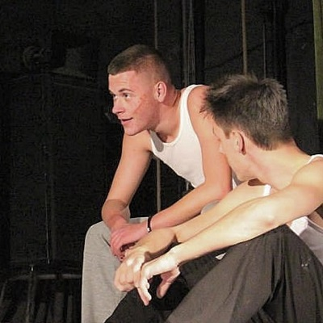

Teatar Ulica
POČETNA
O NAMA
ULOGE
Nenad Novaković
Datum rođenja:
27.04.2000.
Mesto rođenja:
Beograd
Pozicija u Teatru: Glumac, direktor nabavke.
O glumi: Gluma za mene predstavlja beg od realnosti i pokušaj življenja tuđih života.
Volim: Crvenu Zvezdu.
Ne volim: Negativnu energiju.
ULOGE:
Maler (,,Lajanje na zvezde”)
Minimus (,,Životinjska farma”)
Gele (,,Bure baruta”)
- (,,Ljubav za početnike”)
- (,,Solunci”)
Ivan Veselinović (,,Kako ste”)
Životni moto:
Bolje biti bogat i zdrav, jer kad si siromašan džabe ti što si bolestan.

Povratak na prethodnu stranu